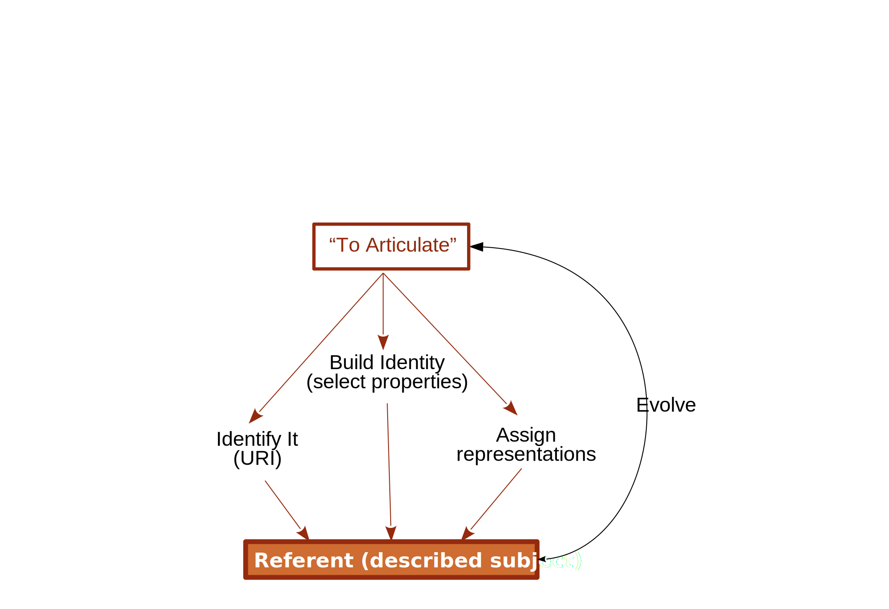

Pointers to the triples to which they apply (URI, containers, patterns)
Metadata to manage these. Size, provenance, history
Provenance Traces
Questions
How we keep track of the history of feature change?
Can this be useful?
Temptative name: Provenance Traces
Provenance Trace mutation

Provenance Trace copy
TODO: Figure of a K-Package being transfered from one part to another.
Provenance Traces
Could be chains of deltas
Could be layered chains of operators
Could be both
We want traceability in form of links exposed by servers or other agents.
Hypothesis Will be useful if they characterize signal.
Chain of deltas
OSTRICH
Pros
Generic
Cons
Miss semantics of change
Question Can we mine patterns?
Layered chains of operators
Known layers
Elementary changes which are atomic tasks.
Aggregated changes to represent composite and complex tasks
Domain specific change patterns.
Layered Change operators
Pros
Can be binded to a tool, expressing semantics
They can be composed into layers with distinct levels of abstraction
There are algorithms to mine patterns from ontology evolution
Cons
Expensive to describe.
Need to share semantics between agents
K-Package evolution
Questions
When agents can refer to evolving K-Packages without risk of inconsistency?
What happens if agents cannot bennefit from an evolving K-Package?
Do they negotiate with other agents?
Do they diverge?
Vocabularies to express:
Dependencies
Layered change operators
Feature exchange
State transitions
State transitions
State transitions are used by the deliberative system of an agent. It contains a symbolic world model, that is used to develop plans and make decisions